Introduction
The General Lake Model (GLM)
The General Lake Model (GLM) is a one-dimensional (1-D), variable-layer hydrodynamic model for lakes, reservoirs, and estuaries. Originally described by Hipsey et al. (2019), GLM simulates the vertical profiles of temperature, salinity, and density driven by surface heat exchange, shortwave radiation, wind mixing, inflows, and outflows. Its key architectural features include:
- Variable-thickness layer scheme — layers merge and split dynamically, giving high resolution where it is needed (near the thermocline) and coarser resolution elsewhere.
- Flexible inflow/outflow — supports multiple rivers, surface spillways, and subsurface outlets at arbitrary elevations.
- Rich surface heat-flux options — sensible heat, latent heat, longwave, and shortwave radiation computed from standard meteorological inputs.
- Sediment heat exchange — allows depth-varying bed temperatures to drive conductive heat flux into the water column.
There is more detailed GLM documentation available from the GLM website,
Source code: :github: https://github.com/AquaticEcoDynamics/GLM/tree/master
Binaries: :github: https://github.com/AquaticEcoDynamics/Binaries
References
Hipsey, M.R., Bruce, L.C., Boon, C., Busch, B., Carey, C.C., Hamilton, D.P., Hanson, P.C., Read, J.S., de Sousa, E., Weber, M. & Winslow, L.A. (2019). A General Lake Model (GLM 3.0) for linking with high-frequency sensor data from the Global Lake Ecological Observatory Network (GLEON). Geoscientific Model Development, 12, 473–523. https://doi.org/10.5194/gmd-12-473-2019
The Aquatic Ecosystem Dynamics (AED) library
The Aquatic Ecodynamics (AED) library (Hipsey et al., 2013) is a modular biogeochemical modelling framework designed to be coupled with hydrodynamic models such as GLM. Each biogeochemical process is implemented as a self-contained module that can be switched on or off independently, making it easy to build simulations that range from simple oxygen tracking through to full nutrient–phytoplankton–zooplankton food-web dynamics.
There is a detailed AED manual available from the AED website, but here we provide a brief overview of the key modules relevant for GLM-AED.
AED modules available in AEME
| Module | AED name | Description |
|---|---|---|
| Sediment flux | aed_sedflux |
Sediment–water interface exchange of O2, nutrients, and silica. Supports constant, constant-2D (depth-zone-specific), and dynamic flux models. |
| Oxygen | aed_oxygen |
Dissolved-oxygen dynamics including reaeration, sediment oxygen demand (SOD), and photosynthesis/respiration coupling. |
| Silica | aed_silica |
Reactive silica cycling — important for diatom growth. |
| Nitrogen | aed_nitrogen |
Full dissolved inorganic nitrogen cycle: ammonium (NH4+), nitrite (NO2−), nitrate (NO3−), N2O; nitrification, denitrification, N-fixation. |
| Phosphorus | aed_phosphorus |
Dissolved reactive phosphorus (DRP / FRP) including redox-sensitive sediment release. |
| Organic matter | aed_organic_matter |
Particulate and dissolved organic carbon (POC/DOC) and organic nitrogen and phosphorus pools; mineralisation, decomposition. |
| Phytoplankton | aed_phytoplankton |
Multi-group phytoplankton dynamics: growth, respiration, nutrient uptake, light limitation, settling, mortality. Default groups: cyanobacteria, green algae, diatoms. |
| Zooplankton | aed_zooplankton |
Zooplankton grazing and dynamics. |
| Macrophytes | aed_macrophyte |
Submerged and emergent macrophyte dynamics. |
| Totals | aed_totals |
Diagnostic aggregates: TN, TP, TOC, chlorophyll-a. |
There is a work-in-progress AED module dependency diagram available
as a html diagram. This can be viewed in R with the
view_aed_modules() function, which opens the diagram in
your RStudio Viewer pane or default web browser. It is embedded below in
an iframe so its styling does not affect this article.
GLM-AED Parameter Library
The glm_aed_parameter_library dataset provides a
comprehensive list of all parameters used in the GLM-AED configuration,
including their default values, units, and typical ranges. This library
serves as a reference for users to understand the parameters governing
the model behaviour and to guide parameterisation for specific
applications. It also includes metadata such as the associated AED
module and a brief description of each parameter’s role in the model and
a web source link for further information.
Getting started
We will use the example lake dataset bundled with the AEME package throughout this vignette.
aeme_file <- system.file("extdata/aeme.rds", package = "AEME")
aeme <- readRDS(aeme_file)
aeme#> #> ── AEME v0.4.0 ───────────────────────────────────────────────────────────────── #> #> ── Lake ── #> #> Wainamu (ID: LID45819) #> • Lat: -36.89; Lon: 174.47 #> • Elev: 23.64m; Depth: 13.07m; Area: 152343 m2 #> #> ── Time ── #> #> • Start: 2020-08-01 00:00:00; Stop: 2021-06-30 00:00:00; Time step: 3600 s; #> Output step: s #> • Timezone: UTC (timestamps stored UTC) #> • Spin up (days): GLM: 2; GOTM: 1; DYRESM: 1; Simstrat: 2 #> #> ── Configuration ── #> #> • Model: glm_aed #> • Path: C:/Users/mooret/Git/AEME #> • Model controls: Present #> • Use biogeochemical model: No #> ┌ Model Configuration ─────────────────────────────────────────┐ #> │ Model Physical Biogeochemical │ #> │ --- │ #> │ DY-CD Absent Absent │ #> │ GLM-AED Absent Absent │ #> │ GOTM-WET Absent Absent │ #> │ SIMSTRAT-AED2 Absent Absent │ #> │ SIMSTRAT-AED Absent Absent │ #> └──────────────────────────────────────────────────────────────┘ #> #> ── Observations ── #> #> • Lake: Present; Level: Present #> #> ── Input ── #> #> • Initial profile: Absent; Initial depth: 13.07m #> • Hypsograph: Present (n=132) #> • Meteo: Present; Use longwave: TRUE; Kw: 1.31 #> #> ── Inflows ── #> #> • Number of inflows: 1; Names: FWMT #> • Scaling factors: DY-CD: 1; GLM-AED: 1; GOTM-WET: 1; Simstrat-AED2: 1 #> #> ── Outflows ── #> #> • Number of outflows: 1; Names: outflow; Elevations: -1 #> • Scaling factors: DY-CD: 1; GLM-AED: 1; GOTM-WET: 1; Simstrat-AED2: 1 #> #> ── Water Balance ── #> #> • Method: 2; Use: obs #> • Modelled: Absent; Water balance: Absent #> #> ── Parameters ── #> #> • Number of parameters: 0 #> #> ── Output ── #> #> • DY-CD: 0 #> • GLM-AED: 0 #> • GOTM-WET: 0 #> • SIMSTRAT-AED2: 0 #> • SIMSTRAT-AED: 0 #> • Variables: 0 #> None #> Warning message: #> ! This <Aeme> object was built with AEME 0.4.0, but the installed version is #> 0.4.1. #> ℹ Consider rebuilding with `build_aeme()` if you encounter unexpected #> behaviour. #> This warning is displayed once per session.
Building a GLM-AED simulation
Model controls
get_model_controls() returns a data frame that governs
which biogeochemical variables are simulated and how they are
initialised. Pass use_bgc = TRUE to enable the full suite
of water-quality variables.
model_controls <- get_model_controls(use_bgc = TRUE)
head(model_controls)
#> <model_controls> 6/6 variables simulated
#> var_aeme simulate inf_default initial_wc initial_sed conversion_aed
#> CAR_doc yes 0 0.5 1000000.0 0.012
#> CAR_poc yes 0 0.2 0.1 0.012
#> CHM_oxy yes 10 10.0 10.0 0.032
#> CHM_salt yes 0 0.0 0.0 1.000
#> HYD_dens yes - - - 1.000
#> HYD_strat yes - - - 1.000You can narrow the set of simulated variables using
set_vars_sim():
vars_sim <- c(
"HYD_strat", # stratification flag
"HYD_temp", # water temperature
"HYD_thmcln", # thermocline depth
"CHM_oxy", # dissolved oxygen
"CHM_oxycln", # oxycline depth
"NIT_amm", # ammonium
"NIT_nit", # nitrate
"NIT_tn", # total nitrogen
"PHS_frp", # filterable reactive phosphorus
"PHS_tp", # total phosphorus
"PHY_tchla" # total chlorophyll-a
)
model_controls <- set_vars_sim(
model_controls = model_controls,
vars_sim = vars_sim
)Build the model
We will build the model in a directory called aeme,
path <- "aeme"build_aeme() translates the AEME object into all
configuration files required by GLM-AED. Setting
use_bgc = TRUE writes the aed/aed.nml file and
supporting CSV parameter files for phytoplankton, zooplankton, and
macrophytes.
model <- "glm_aed"
aeme <- build_aeme(
aeme = aeme,
model = model,
path = path,
model_controls = model_controls,
ext_elev = 3,
use_bgc = TRUE
)The configuration files are stored in the configuration
slot of the aeme object. For GLM-AED the slot contains the
parsed GLM hydrodynamic nml (glm3.nml or
glm4.nml, whichever version was built – see
find_glm_nml()) and aed/aed.nml:
cfg <- configuration(aeme)
names(cfg[["glm_aed"]])
#> [1] "hydrodynamic" "bgc" "hydrodynamic_file"GLM-AED specific features
Selecting AED biogeochemical modules
By default, all AED modules are enabled.
set_glm_aed_models() lets you choose a subset — for
example, running hydrodynamics coupled with oxygen and nutrient cycling
only, without phytoplankton or zooplankton:
# Rebuild first so we have a clean state
aeme <- build_aeme(
aeme = aeme,
model = model,
model_controls = model_controls,
path = path,
ext_elev = 5,
use_bgc = TRUE
)
# Switch on all available modules (the default)
aeme <- set_glm_aed_models(
aeme = aeme,
path = path,
aed_models = c(
"aed_sedflux",
"aed_oxygen",
"aed_silica",
"aed_nitrogen",
"aed_phosphorus",
"aed_organic_matter",
"aed_phytoplankton",
"aed_zooplankton",
"aed_macrophyte",
"aed_totals"
)
)To run a minimal simulation with only oxygen and nutrient cycling:
aeme <- set_glm_aed_models(
aeme = aeme,
path = path,
aed_models = c(
"aed_sedflux",
"aed_oxygen",
"aed_nitrogen",
"aed_phosphorus"
)
)set_glm_aed_models() works on a model that has already
been built. To choose the modules (and which other AED setup steps run)
as part of the build itself, pass aed_options() to
build_aeme():
aeme <- build_aeme(
aeme = aeme,
model = model,
model_controls = model_controls,
path = path,
ext_elev = 5,
use_bgc = TRUE,
aed = aed_options(
# Only oxygen and nutrient cycling (plus whatever they depend on)
modules = c("aed_sedflux", "aed_oxygen", "aed_nitrogen", "aed_phosphorus"),
# Keep the sediment fluxes already in aed.nml rather than estimating them
sed_zones = FALSE,
# Don't derive the aed_totals variable lists
totals = FALSE
)
)By default aed_options() leaves every step on, so a
plain build_aeme(use_bgc = TRUE) is unchanged. Each step is
also available on its own after the build:
set_glm_aed_models(), set_aed_sed_const2d()
and set_aed_totals().
AED module dependency hierarchy
AED modules are not independent of one another — most reference state
variables that are only computed if another module is switched on. For
example, aed_nitrogen reduces ammonium using
OXY_oxy as its oxidant, so it requires
aed_oxygen to also be active; if it is not, GLM aborts at
runtime with an “Undefined variable” error rather than silently ignoring
the missing link.
build_aeme() resolves this automatically: when you set
simulate = TRUE for a biogeochemical variable via
model_controls, initialise_aed() determines
which module that variable belongs to, then walks the dependency graph
below to a fixed point, adding every module that dependency chain
requires — you never need to enable a module’s prerequisites by hand.
The one place this isn’t automatic is
set_glm_aed_models() (used above), which sets the
active-module list exactly as given, so it is up to you to include the
full chain if you call it directly.
(aed_options(modules = ) adds the prerequisites for you
unless you set resolve_deps = FALSE.)
The dependency graph, verified directly against the target-variable
links configured in AEME’s bundled aed.nml template:
aed_sedflux
└─ aed_oxygen (sediment oxygen demand)
├─ aed_silica (silica reactant = OXY_oxy)
├─ aed_nitrogen (nitrification reactant = OXY_oxy; also needs aed_sedflux directly)
├─ aed_phosphorus (P release reactant = OXY_oxy; also needs aed_sedflux directly)
└─ aed_organic_matter (mineralisation reactant = OXY_oxy)
├─ needs aed_nitrogen (DON mineralisation product)
├─ needs aed_phosphorus (DOP mineralisation product = PHS_frp)
├─ aed_zooplankton (excretion/mortality targets)
└─ aed_phytoplankton (uptake/excretion/mortality targets;
needs aed_oxygen, aed_nitrogen,
aed_phosphorus, aed_silica, and
aed_organic_matter directly)
└─ aed_totals (TN/TP/TOC totals aggregate state
variables owned by aed_nitrogen,
aed_phosphorus, aed_organic_matter,
and aed_phytoplankton)
aed_macrophyte (no enforced dependencies — no target-variable links in the
bundled template)| Module | Required dependencies | Why |
|---|---|---|
aed_sedflux |
— | Sediment flux is the base of the chain; nothing else must be active first. |
aed_oxygen |
aed_sedflux |
Sediment oxygen demand flux comes from
aed_sedflux. |
aed_silica |
aed_oxygen |
Silica reactant variable is OXY_oxy. |
aed_nitrogen |
aed_oxygen, aed_sedflux
|
Nitrification reactant is OXY_oxy; sediment
NH4/NO3 fluxes come from
aed_sedflux. |
aed_phosphorus |
aed_oxygen, aed_sedflux
|
Redox-sensitive P release reactant is OXY_oxy; sediment
FRP flux comes from aed_sedflux. |
aed_organic_matter |
aed_oxygen, aed_nitrogen,
aed_phosphorus
|
Mineralisation reactant is OXY_oxy; DON/DOP
mineralisation products feed
aed_nitrogen/aed_phosphorus. |
aed_phytoplankton |
aed_oxygen, aed_nitrogen,
aed_phosphorus, aed_silica,
aed_organic_matter
|
Growth/uptake/excretion/mortality target variables span all five modules (e.g. diatom silica uptake, nutrient uptake, DOM excretion). |
aed_zooplankton |
aed_organic_matter |
Excretion and mortality products are organic-matter state variables. |
aed_totals |
aed_nitrogen, aed_phosphorus,
aed_organic_matter, aed_phytoplankton
|
Its TN_vars/TP_vars/TOC_vars
lists aggregate state variables owned by these four modules
(e.g. NIT_nit, PHS_frp, OGM_doc,
PHY_green). |
aed_macrophyte |
— | No target-variable links to other modules in the bundled template. |
For example, requesting only NIT_tn (total nitrogen) in
model_controls looks like a single-variable request, but
because it is a diagnostic total computed by aed_totals,
and aed_totals in turn depends on nitrogen, phosphorus,
organic matter, and phytoplankton, build_aeme() activates
the following module set automatically:
mc <- get_model_controls(use_bgc = TRUE) |>
set_vars_sim(vars_sim = "NIT_tn")
aeme_nit_tn <- build_aeme(
aeme = aeme,
model = model,
path = path,
model_controls = mc,
ext_elev = 5,
use_bgc = TRUE
)
config_files <- get_model_config_files(aeme)
nml <- read_nml(config_files$glm_aed["aed"])
get_nml_value(nml, "models")
#> [1] "aed_sedflux" "aed_noncohesive" "aed_oxygen"
#> [4] "aed_silica" "aed_nitrogen" "aed_phosphorus"
#> [7] "aed_organic_matter" "aed_phytoplankton" "aed_totals"Sediment zones
One of the most important GLM-AED features for water-quality
simulation is depth-varying sediment parameters. GLM
divides the lake bed into sediment zones, each with its own
temperature regime and (when using aed_sedflux in
Constant2d mode) its own sediment–water interface fluxes of
oxygen and nutrients.
Deeper zones typically accumulate more organic matter, experience longer periods of anoxia, and therefore have higher sediment oxygen demand (SOD) and nutrient release than shallow littoral zones.
Estimating zone boundaries from the hypsograph
estimate_sed_zones() automatically partitions the
hypsograph into an appropriate number of zones by detecting natural
breakpoints in the depth–area relationship:
hypsograph <- get_hypsograph(aeme)
zone_heights <- estimate_sed_zones(hypsograph)
zone_heights
#> [1] 3.07 22.00The returned vector gives the upper height of each zone measured from the lake bed (metres). The last value equals the maximum lake depth.
Generating GLM sediment parameters
glm_sed_params() builds a parameters data frame
(compatible with the AEME parameters slot) for the GLM
sediment module:
sed_params <- glm_sed_params(
n_zones = length(zone_heights),
zone_heights = zone_heights,
sed_temp_mean = c(14, 16, 18)[seq_along(zone_heights)],
sed_temp_amplitude = c(6, 4, 2)[seq_along(zone_heights)],
sed_temp_peak_doy = rep(30, length(zone_heights))
)
sed_params
#> model file name value min max group index
#> 1 glm_aed glm4.nml sediment/benthic_mode 2.00 2.000 2.000 <NA> NA
#> 2 glm_aed glm4.nml sediment/n_zones 2.00 2.000 2.000 <NA> NA
#> 3 glm_aed glm4.nml sediment/sed_heat_Ksoil 0.01 0.005 0.015 <NA> 1
#> 4 glm_aed glm4.nml sediment/sed_heat_Ksoil 0.01 0.005 0.015 <NA> 2
#> 5 glm_aed glm4.nml sediment/sed_temp_depth 0.20 0.100 0.300 <NA> 1
#> 6 glm_aed glm4.nml sediment/sed_temp_depth 0.20 0.100 0.300 <NA> 2
#> 7 glm_aed glm4.nml sediment/sed_temp_mean 14.00 7.000 21.000 <NA> 1
#> 8 glm_aed glm4.nml sediment/sed_temp_mean 16.00 8.000 24.000 <NA> 2
#> 9 glm_aed glm4.nml sediment/sed_temp_amplitude 6.00 3.000 9.000 <NA> 1
#> 10 glm_aed glm4.nml sediment/sed_temp_amplitude 4.00 2.000 6.000 <NA> 2
#> 11 glm_aed glm4.nml sediment/sed_temp_peak_doy 30.00 15.000 45.000 <NA> 1
#> 12 glm_aed glm4.nml sediment/sed_temp_peak_doy 30.00 15.000 45.000 <NA> 2
#> 13 glm_aed glm4.nml sediment/zone_heights 3.07 1.535 4.605 <NA> 1
#> 14 glm_aed glm4.nml sediment/zone_heights 22.00 11.000 33.000 <NA> 2
#> 15 glm_aed glm4.nml sediment/sed_reflectivity 0.01 0.005 0.015 <NA> 1
#> 16 glm_aed glm4.nml sediment/sed_reflectivity 0.01 0.005 0.015 <NA> 2
#> 17 glm_aed glm4.nml sediment/sed_roughness 0.01 0.005 0.015 <NA> 1
#> 18 glm_aed glm4.nml sediment/sed_roughness 0.01 0.005 0.015 <NA> 2
#> module
#> 1 sediment
#> 2 sediment
#> 3 sediment
#> 4 sediment
#> 5 sediment
#> 6 sediment
#> 7 sediment
#> 8 sediment
#> 9 sediment
#> 10 sediment
#> 11 sediment
#> 12 sediment
#> 13 sediment
#> 14 sediment
#> 15 sediment
#> 16 sediment
#> 17 sediment
#> 18 sedimentAdd these parameters to the aeme object so that they are
applied during the next build_aeme() call:
parameters(aeme) <- sed_params
# Rebuild to apply the new sediment zone parameters
aeme <- build_aeme(
aeme = aeme,
model = model,
model_controls = model_controls,
path = path,
ext_elev = 5,
use_bgc = TRUE
)Inspecting sediment zones in the built model
After building, you can retrieve the number of zones and their parameters:
n_zones <- get_glm_sed_zones(aeme = aeme, path = path)
sed_pars <- get_glm_sed_params(aeme = aeme, path = path)
cat("Number of sediment zones:", n_zones, "\n")
#> Number of sediment zones: 2
sed_pars
#> model file name value min max index group
#> 1 glm_aed glm3.nml sediment/benthic_mode 2.00 2.00 2.00 NA <NA>
#> 2 glm_aed glm3.nml sediment/n_zones 2.00 2.00 2.00 NA <NA>
#> 3 glm_aed glm3.nml sediment/zone_heights 3.07 3.07 3.07 1 <NA>
#> 4 glm_aed glm3.nml sediment/zone_heights 22.00 22.00 22.00 2 <NA>
#> 5 glm_aed glm3.nml sediment/sed_reflectivity 0.01 0.01 0.01 1 <NA>
#> 6 glm_aed glm3.nml sediment/sed_reflectivity 0.01 0.01 0.01 2 <NA>
#> 7 glm_aed glm3.nml sediment/sed_roughness 0.01 0.01 0.01 1 <NA>
#> 8 glm_aed glm3.nml sediment/sed_roughness 0.01 0.01 0.01 2 <NA>
#> 9 glm_aed glm3.nml sediment/sed_heat_model 2.00 2.00 2.00 NA <NA>
#> 10 glm_aed glm3.nml sediment/n_sed_layers 8.00 8.00 8.00 NA <NA>
#> 11 glm_aed glm3.nml sediment/sed_layer_depth 0.00 0.00 0.00 1 <NA>
#> 12 glm_aed glm3.nml sediment/sed_layer_depth 0.02 0.02 0.02 2 <NA>
#> 13 glm_aed glm3.nml sediment/sed_layer_depth 0.05 0.05 0.05 3 <NA>
#> 14 glm_aed glm3.nml sediment/sed_layer_depth 0.10 0.10 0.10 4 <NA>
#> 15 glm_aed glm3.nml sediment/sed_layer_depth 0.20 0.20 0.20 5 <NA>
#> 16 glm_aed glm3.nml sediment/sed_layer_depth 0.40 0.40 0.40 6 <NA>
#> 17 glm_aed glm3.nml sediment/sed_layer_depth 0.80 0.80 0.80 7 <NA>
#> 18 glm_aed glm3.nml sediment/sed_layer_depth 1.50 1.50 1.50 8 <NA>
#> 19 glm_aed glm3.nml sediment/sed_vwc 0.40 0.40 0.40 NA <NA>
#> 20 glm_aed glm3.nml sediment/sed_spinup_days 30.00 30.00 30.00 NA <NA>
#> 21 glm_aed glm3.nml sediment/sed_temp_mean 14.00 14.00 14.00 1 <NA>
#> 22 glm_aed glm3.nml sediment/sed_temp_mean 16.00 16.00 16.00 2 <NA>
#> 23 glm_aed glm3.nml sediment/sed_temp_amplitude 6.00 6.00 6.00 1 <NA>
#> 24 glm_aed glm3.nml sediment/sed_temp_amplitude 4.00 4.00 4.00 2 <NA>
#> 25 glm_aed glm3.nml sediment/sed_temp_peak_doy 30.00 30.00 30.00 1 <NA>
#> 26 glm_aed glm3.nml sediment/sed_temp_peak_doy 30.00 30.00 30.00 2 <NA>
#> 27 glm_aed glm3.nml sediment/sed_temp_deep 10.00 10.00 10.00 1 <NA>
#> 28 glm_aed glm3.nml sediment/sed_temp_deep 10.00 10.00 10.00 2 <NA>
#> 29 glm_aed glm3.nml sediment/sed_heat_Ksoil 0.01 0.01 0.01 1 <NA>
#> 30 glm_aed glm3.nml sediment/sed_heat_Ksoil 0.01 0.01 0.01 2 <NA>
#> 31 glm_aed glm3.nml sediment/sed_temp_depth 0.20 0.20 0.20 1 <NA>
#> 32 glm_aed glm3.nml sediment/sed_temp_depth 0.20 0.20 0.20 2 <NA>Estimating depth-varying sediment fluxes
estimate_zone_fluxes() scales literature-baseline
sediment fluxes to each zone according to its mean depth and bed-area
fraction (Tier 1). When observed near-bed concentrations are available
in the aeme object, an optional Tier 2 adjustment refines
the inter-zone ratios using summer near-bottom data:
fluxes <- estimate_zone_fluxes(
aeme = aeme,
path = path,
baseline = c(
fsed_oxy = -25, # mmol O2/m2/d (negative = into sediment)
fsed_amm = 2, # mmol N/m2/d
fsed_nit = 0.2, # mmol N/m2/d
fsed_frp = 0.05 # mmol P/m2/d
),
verbose = TRUE
)The zone summary shows each zone’s depth range, bed area, and estimated fluxes:
fluxes$zone_summary
#> zone height_lower_m height_upper_m depth_upper_m depth_lower_m mean_depth_m
#> 1 1 0.00 3.07 10 13.07 11.54
#> 2 2 3.07 22.00 0 10.00 5.00
#> area_m2 area_frac fsed_oxy fsed_amm fsed_nit fsed_frp
#> 1 43957 0.289 -38.8 5.698 -0.4 0.1072
#> 2 108386 0.711 -19.4 0.500 0.1 0.0268Applying sediment fluxes to the AED configuration
set_aed_sed_const2d() writes the zone-specific fluxes
directly into the aed/aed.nml file and updates the
aeme object:
aeme <- set_aed_sed_const2d(
aeme = aeme,
path = path,
baseline = c(
fsed_oxy = -25,
fsed_amm = 2,
fsed_nit = 0.2,
fsed_frp = 0.05
)
)After calling set_aed_sed_const2d(), you can confirm the
written parameters:
get_aed_sed_const2d_param(aeme = aeme, path = path) |>
dplyr::select(name, value, index) |>
head(20)
#> # A tibble: 11 × 3
#> name value index
#> <chr> <dbl> <dbl>
#> 1 aed_sed_const2d/active_zones 1 1
#> 2 aed_sed_const2d/active_zones 2 2
#> 3 aed_sed_const2d/fsed_amm 2 1
#> 4 aed_sed_const2d/fsed_amm 2 2
#> 5 aed_sed_const2d/fsed_frp 0.05 1
#> 6 aed_sed_const2d/fsed_frp 0.05 2
#> 7 aed_sed_const2d/fsed_nit -0.2 1
#> 8 aed_sed_const2d/fsed_nit -0.2 2
#> 9 aed_sed_const2d/fsed_oxy -25 1
#> 10 aed_sed_const2d/fsed_oxy -25 2
#> 11 aed_sed_const2d/n_zones 2 NAVisualising the model configuration
plot_glm_config() generates an interactive HTML
visualisation of the complete GLM-AED setup, including the hypsograph,
sediment zones, inflow/outflow positions, active AED modules, and key
parameter values. If called inside an RStudio session, the output opens
in the Viewer pane; otherwise it is saved to a temporary HTML file.
config_html <- plot_glm_config(aeme = aeme)This html widget provides a comprehensive overview of the model configuration, making it easy to verify that the setup matches your intentions and to identify any potential issues before running the model.
You can view the HTML widget directly in RStudio’s Viewer pane or open it in your web browser.
Hypsograph & sediment zones
AED biogeochemical modules
Visualising model output
Temperature and stratification
plot_output() produces a filled contour plot for
depth-varying variables (e.g. temperature) and a time-series line plot
for scalar variables:
plot_output(aeme = aeme, var_sim = "HYD_temp")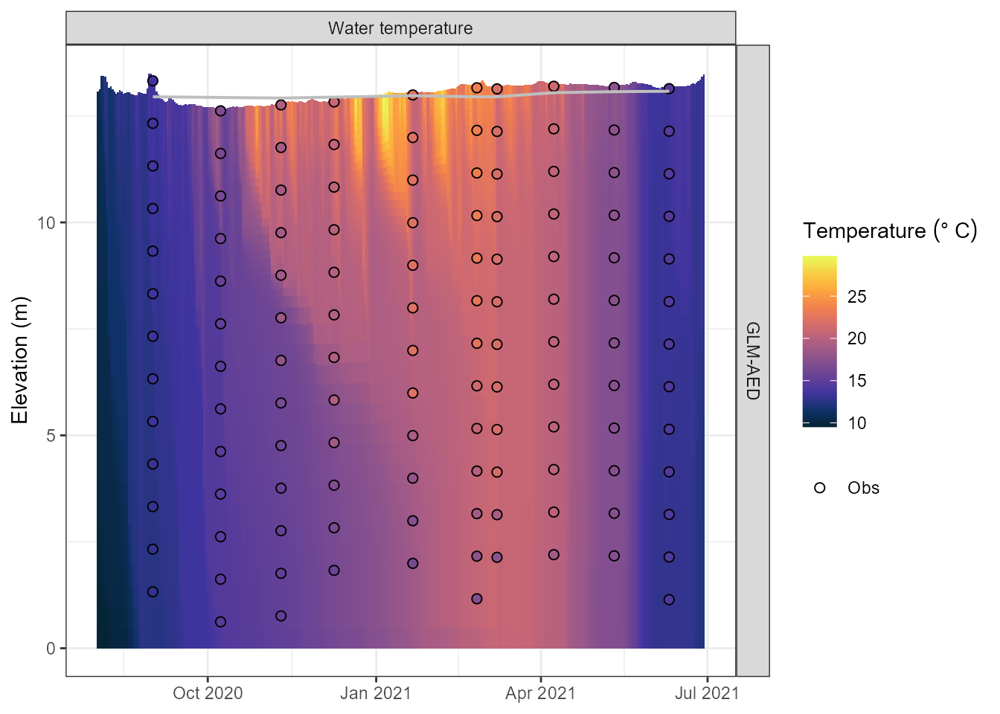
Simulated water temperature (°C) at each model layer over time.
Water quality variables
Any variable that was listed in vars_sim and is present
in the output can be plotted the same way:
plot_output(aeme = aeme, var_sim = "CHM_oxy")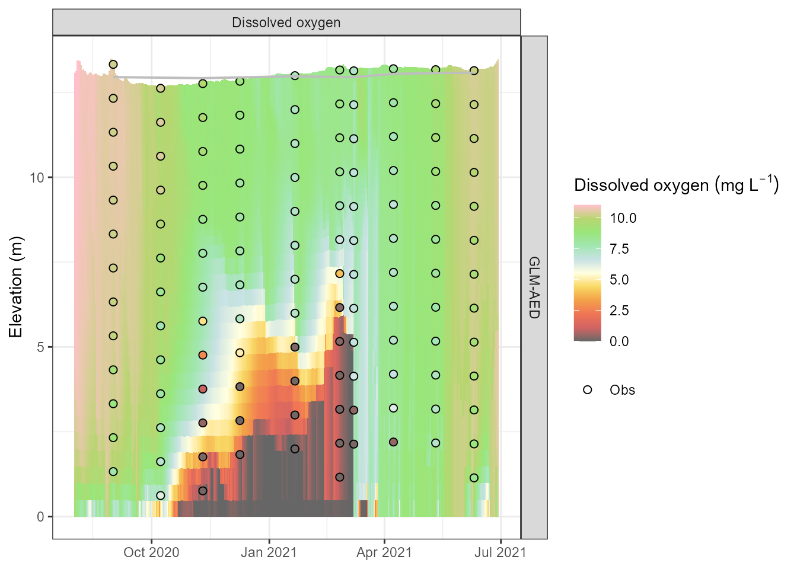
Simulated dissolved oxygen (mmol O2 m⁻³) profiles.
plot_output(aeme = aeme, var_sim = "PHY_tchla")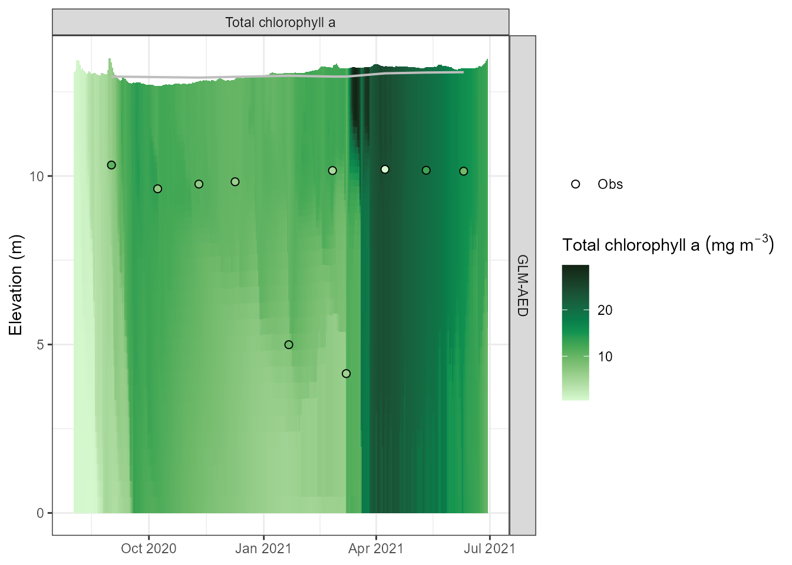
Simulated total chlorophyll-a (µg L⁻¹) time series.
Sediment, flux and diagnostic output
GLM-AED writes much more than the variables listed in
model_controls: sediment temperature and heat flux,
sediment–water fluxes (lake-wide and for each sediment zone), sediment
pools and AED diagnostics. They are all in output.nc, but
run_aeme() only loads the standard variables (those in
model_controls, plus the lake fluxes) so that loading stays
fast and the aeme object small. The extra output is loaded
when you ask for it with extra_vars.
Requesting the variables
load_output() reads the output of a model that has
already been run, so extra variables can be added without running the
model again. Here we ask for every sediment variable:
aeme_extra <- load_output(
aeme = aeme,
model = model,
path = path,
extra_vars = "sediment"
)run_aeme() takes the same extra_vars
argument, to load them as part of the run. To look at extra output
without storing it on the Aeme object, use
return_type = "output". This returns a list with one
aeme_output per model and leaves aeme as it
was:
sed_out <- load_output(
aeme = aeme,
model = model,
path = path,
extra_vars = "sediment",
return_type = "output"
)
sed_out$glm_aed
#> <aeme_output> model: glm_aed
#> 335 dates (2020-07-31 to 2021-06-30)
#> 46 variables: LKE_lvlwtr, LKE_Qe, LKE_Qh, LKE_Qlw, LKE_Qsw, LKE_vol, LKE_evpvol, LKE_evpflx, LKE_A0, LKE_evprte, LKE_inflow, LKE_overflow, LKE_outflow, LKE_outftot, LKE_precip, LKE_pcpvol, HYD_surft, z, HYD_temp, HYD_dens, HYD_strat, HYD_thmcln, CHM_salt, CHM_oxy, CHM_oxycln, RAD_par, RAD_extc, PHS_frp, PHS_dop, PHS_pop, PHS_pip, PHS_tp, NIT_amm, NIT_nit, NIT_don, NIT_pon, NIT_tn, CAR_doc, CAR_poc, SIL_rsi, PHY_cyano, PHY_green, PHY_diatom, PHY_tchla, NCS_ss1, NCS_ss2
#> 34 sediment variables: zarea, sed_temp, sed_heatflux, zone_ztemp, sed_layer_depth, SDF_Fsed_oxy_Z, SDF_Fsed_amm_Z, SDF_Fsed_nit_Z, SDF_Fsed_frp_Z, NCS_swi_Z, NCS_swi_dz_Z, NCS_resus_Z, NCS_d_taub_Z, OXY_oxy_dsf_Z, OXY_oxy_atm_Z, SIL_dsf_rsi_Z, NIT_amm_dsf_Z, NIT_nit_dsf_Z, PHS_frp_dsf_Z, OGM_toc_sed_Z, OGM_ton_sed_Z, OGM_top_sed_Z, OGM_poc_swi_Z, OGM_doc_swi_Z, OGM_pon_swi_Z, OGM_don_swi_Z, OGM_pop_swi_Z, OGM_dop_swi_Z, OGM_poc_res_Z, OGM_pon_res_Z, OGM_pop_res_Z, PHY_phy_swi_c_Z, PHY_phy_swi_n_Z, PHY_phy_swi_p_ZModel output of this kind can be given straight to
plot_model_output(), for example
plot_model_output(sed_out$glm_aed, "SED_Fsed_oxy"), but not
to functions that need an Aeme object, such as
get_var() and plot_output(). The rest of this
section stores the variables on the object, so that
get_var() works. In the output the extra variables sit
beside the standard ones:
- ordinary
(time)and(depth, time)variables sit alongsideHYD_tempand the rest; - variables with other dimensions (sediment zones, sediment layers)
are kept as labelled
aeme_grouped_varobjects in thesedimentanddiagsub-lists, so a zone is never mistaken for a depth.
get_output_vars() lists what was loaded. The
group argument picks the sub-list:
get_output_vars(aeme_extra, model = "glm_aed", group = "sediment") |>
head(12)
#> sediment zone area
#> "zarea"
#> sediment temperature
#> "sed_temp"
#> sediment-water heat flux
#> "sed_heatflux"
#> zone water temp (sed top BC)
#> "zone_ztemp"
#> sediment node depth
#> "sed_layer_depth"
#> flux rate of oxygen across the swi (by zone)
#> "SDF_Fsed_oxy_Z"
#> flux rate of amm across the swi (by zone)
#> "SDF_Fsed_amm_Z"
#> flux rate of nit across the swi (by zone)
#> "SDF_Fsed_nit_Z"
#> flux rate of frp across the swi (by zone)
#> "SDF_Fsed_frp_Z"
#> net flux across the sediment-water interface (by zone)
#> "NCS_swi_Z"
#> cum. swi position change (by zone)
#> "NCS_swi_dz_Z"
#> resuspension rate (by zone)
#> "NCS_resus_Z"These variables are stored under their raw GLM-AED netCDF names. The
glm_extra_vars table lists what can be requested. It gives
each variable an AEME name, a label and units, and either name works in
extra_vars and anywhere AEME looks up a variable
(get_var(), check_var_in_output(), …).
SED_* are the sediment-zone variables and
SEDL_* the matching lake-wide series:
glm_extra_vars |>
dplyr::filter(group == "sediment") |>
dplyr::select(var_aeme, glm_aed, units, name_text) |>
head(12)
#> var_aeme glm_aed units
#> 1 SED_zarea zarea m2
#> 2 SED_temp sed_temp celsius
#> 3 SED_hflux sed_heatflux W/m2
#> 4 SED_ztemp zone_ztemp celsius
#> 5 SED_layer_depth sed_layer_depth meters
#> 6 SED_Fsed_oxy SDF_Fsed_oxy_Z mmol O2/m2/d
#> 7 SED_Fsed_amm SDF_Fsed_amm_Z mmol N/m2/d
#> 8 SED_Fsed_nit SDF_Fsed_nit_Z mmol N/m2/d
#> 9 SED_Fsed_frp SDF_Fsed_frp_Z mmol P/m2/d
#> 10 SED_ncs_swi NCS_swi_Z g/m2/d
#> 11 SED_ncs_swi_dz NCS_swi_dz_Z m/d
#> 12 SED_ncs_resus NCS_resus_Z g/m2/s
#> name_text
#> 1 sediment zone area
#> 2 sediment temperature
#> 3 sediment-water heat flux
#> 4 zone water temp (sed top BC)
#> 5 sediment node depth
#> 6 flux rate of oxygen across the swi (by zone)
#> 7 flux rate of amm across the swi (by zone)
#> 8 flux rate of nit across the swi (by zone)
#> 9 flux rate of frp across the swi (by zone)
#> 10 net flux across the sediment-water interface (by zone)
#> 11 cum. swi position change (by zone)
#> 12 resuspension rate (by zone)Sediment temperature
SED_temp is the temperature of the sediment layers
beneath each zone. It has three dimensions (sediment layer, zone and
time), so get_var() returns it in long format, one row per
layer, zone and date. plot_output() draws it with one line
per zone and layer. Use zone and sed_layer, in
either function, to choose which. Zones follow the GLM order (1 is the
deepest) and layer 1 is the shallowest. It is only written when GLM’s
sediment heat model is on (sed_heat_model = 2 in the GLM
nml). If your run does not have it, the chunks below that use it are
skipped.
sed_temp <- get_var(aeme_extra, model = "glm_aed", var_sim = "SED_temp")
n_layer <- max(sed_temp$sed_layers)
# the top and bottom sediment layer of each zone
plot_output(aeme_extra, var_sim = "SED_temp", sed_layer = c(1, n_layer))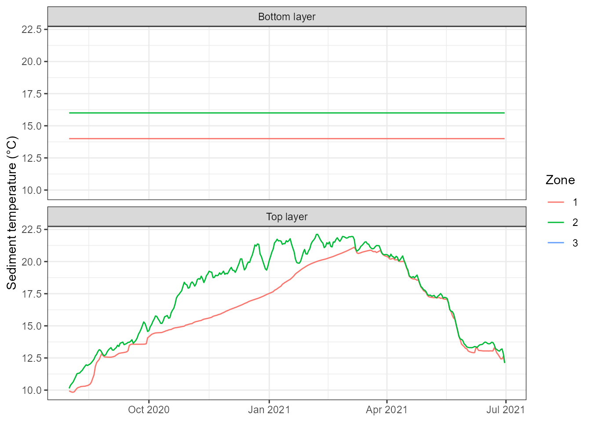
Sediment temperature (°C) in the top and bottom sediment layer of each zone.
A zone that has no area in GLM’s output for the simulated period is
returned as NA, so it is missing from the plot above (zone
3 in this lake). get_var() takes the same zone
and sed_layer arguments and returns a single series, for
example the top layer of the deepest zone:
Sediment–water fluxes by zone
Fluxes across the sediment–water interface are written for each zone
as well as for the whole lake. Zone variables
(SED_Fsed_oxy, SED_Fsed_amm, …) have a
nzones column, and are plotted with
plot_output() like any other variable, with one line per
zone:
plot_output(aeme_extra, var_sim = "SED_Fsed_oxy")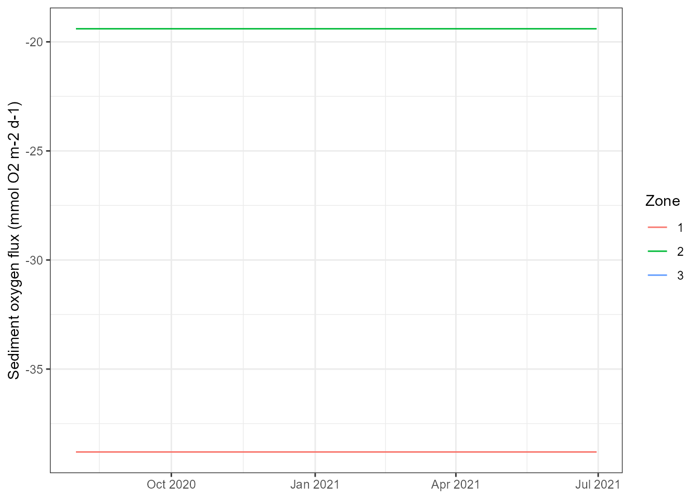
Simulated sediment oxygen flux (mmol O2 m⁻² d⁻¹) in each sediment zone.
Choosing what to keep
Loading every variable in the file ("all") is convenient
for exploring a single run, but it is wasteful when the model is run
many times, as in a sensitivity analysis, calibration or ensemble: in
this lake it takes about four times as long to load and five times the
memory, and most of it is never looked at. The sediment variables on
their own are a small part of that, but a calibration usually needs only
one or two series. That is why nothing extra is loaded by default.
run_aeme(), run_aeme_ensemble() and
load_output() take an extra_vars argument to
choose what is read from output.nc. Variables that are not
requested are never read.
extra_vars |
What is loaded |
|---|---|
"none" (default) |
No extra variables, just the standard set |
c("SED_temp", "SED_Fsed_oxy") |
Only these. AEME or raw netCDF names |
"sediment" or "diag"
|
Every variable stored in that sub-list |
"all" |
Every variable in output.nc
|
Two further arguments reduce what is kept for the variables you do
select. sed_layers keeps only some sediment layers of
SED_temp, and zone_summary = TRUE adds a
lake-wide series for each sediment-zone variable. The series is the mean
over zones, weighted by the (time-varying) area of each zone, and is
stored as <name>_lake:
aeme_sel <- load_output(
aeme = aeme,
model = model,
path = path,
extra_vars = c("SED_temp", "SED_Fsed_oxy", "SED_Fsed_amm"),
sed_layers = 1:3,
zone_summary = TRUE
)
size_mb <- function(x) {
format(object.size(output(x)$ens_001$glm_aed), units = "MB")
}
c(default = size_mb(aeme), all_sediment = size_mb(aeme_extra),
selected = size_mb(aeme_sel))
#> default all_sediment selected
#> "3.3 Mb" "3.8 Mb" "3.4 Mb"The standard output is identical whatever is requested. Only the extras differ.
identical(output(aeme)$ens_001$glm_aed$HYD_temp,
output(aeme_sel)$ens_001$glm_aed$HYD_temp)
#> [1] TRUE
names(output(aeme_sel)$ens_001$glm_aed$sediment)
#> [1] "sed_temp" "SDF_Fsed_oxy_Z" "SDF_Fsed_amm_Z"
#> [4] "SDF_Fsed_oxy_Z_lake" "SDF_Fsed_amm_Z_lake"The lake-wide series is a single time series, handy as a calibration target or for comparing with whole-lake estimates of sediment oxygen demand:
plot_output(aeme_sel, var_sim = "SED_Fsed_oxy_lake")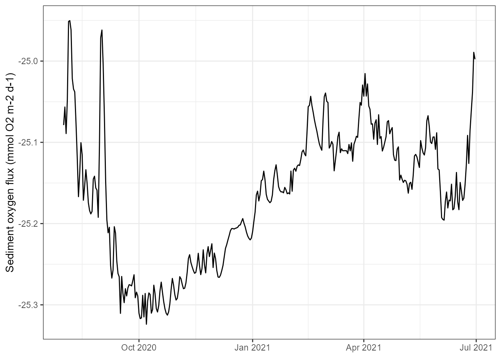
Zone-area weighted lake-wide sediment oxygen flux (mmol O2 m⁻² d⁻¹).
A name ending _lake can also be requested on its own,
for example extra_vars = "SED_Fsed_oxy_lake". AEME then
builds that series and does not keep the per-zone array behind it.
Using these variables in ensembles and calibration
run_aeme_ensemble() passes extra_vars,
sed_layers, zone_summary and
keep_diag to every member, so a sensitivity analysis or
calibration run with aemetools can ask for just the
series it needs:
aeme <- run_aeme_ensemble(
aeme,
model = "glm_aed",
param_sets = param_sets, # e.g. sampled with aemetools
extra_vars = c("SED_temp", "SED_Fsed_oxy_lake"),
sed_layers = 1
)
# Member 3's top-layer sediment temperature, in the deepest zone
get_var(aeme, model = "glm_aed", var_sim = "SED_temp",
zone = 1, sed_layer = 1, ens_n = 3)The sediment parameters estimated earlier
(sed_temp_mean, the zone fluxes) are the natural ones to
vary when these outputs are the target.
Assessing model performance
When observations are stored in the aeme object,
assess_model() computes a suite of skill metrics (RMSE,
NSE, bias, Pearson r, etc.) for each simulated variable:
skill <- assess_aeme(aeme = aeme, model = model)
skill
#> Model name_text var_aeme bias mae rmse nmae
#> 1 GLM-AED Dissolved organic C CAR_doc -2.66e+00 2.66e+00 2.71e+00 0.9800
#> 2 GLM-AED Dissolved oxygen CHM_oxy 1.07e+00 1.21e+00 1.86e+00 0.1760
#> 3 GLM-AED Oxycline depth CHM_oxycln 1.95e+00 1.95e+00 2.27e+00 0.2170
#> 4 GLM-AED Salinity CHM_salt -1.17e-01 1.17e-01 1.17e-01 1.0000
#> 5 GLM-AED Stratified HYD_strat 0.00e+00 2.00e-01 4.47e-01 0.2860
#> 6 GLM-AED Water temperature HYD_temp -2.46e-01 8.52e-01 1.15e+00 0.0473
#> 7 GLM-AED Thermocline depth HYD_thmcln -2.60e+00 3.27e+00 4.62e+00 0.3410
#> 8 GLM-AED Water level LKE_lvlwtr 1.18e-01 1.58e-01 1.88e-01 0.0067
#> 9 GLM-AED Volume LKE_vol 1.77e+04 2.37e+04 2.82e+04 0.0217
#> 10 GLM-AED Ammoniacal nitrogen NIT_amm 7.38e-03 1.36e-02 2.76e-02 1.1600
#> 11 GLM-AED Nitrate NIT_nit 2.85e-03 2.85e-03 4.28e-03 1.7800
#> 12 GLM-AED Total nitrogen NIT_tn -7.45e-02 7.45e-02 8.21e-02 0.3930
#> 13 GLM-AED Phosphate PHS_frp -1.18e-03 1.26e-03 1.48e-03 0.6970
#> 14 GLM-AED Total phosphorus PHS_tp -3.44e-03 4.16e-03 5.45e-03 0.3680
#> 15 GLM-AED Cyanobacteria PHY_cyano 5.80e-02 1.14e-01 1.93e-01 3.0400
#> 16 GLM-AED Total chlorophyll a PHY_tchla 5.90e+00 7.10e+00 9.16e+00 0.9830
#> nse kge d2 r rs B n obs_na sim_na
#> 1 -32.1000 -0.817 0.2140 -0.216 -0.5630 0.00137 10 0 0
#> 2 0.6600 0.707 0.8920 0.885 0.9120 0.58500 125 0 0
#> 3 -0.3570 0.667 0.7350 0.805 0.7430 0.27500 8 0 0
#> 4 -329.0000 NA 0.0827 NA NA 0.00000 125 0 0
#> 5 0.0476 0.524 0.7520 0.524 0.5240 0.14100 10 0 0
#> 6 0.8630 0.922 0.9670 0.939 0.9260 0.77500 125 0 0
#> 7 -1.4500 0.268 0.6280 0.502 0.4160 0.07310 10 0 0
#> 8 -9.2800 -0.802 0.4360 0.366 0.3170 0.01190 8 0 0
#> 9 -9.2200 -0.788 0.4360 0.365 0.3170 0.01190 8 0 0
#> 10 -1.0500 -0.105 0.7170 0.684 0.5970 0.15300 20 0 0
#> 11 -3.7700 -1.040 0.4880 0.483 0.4470 0.04040 20 0 0
#> 12 -8.2200 0.190 0.3750 0.587 0.3270 0.03370 20 0 0
#> 13 -1.8800 0.195 0.6200 0.583 0.4820 0.08750 20 0 0
#> 14 -0.0781 0.277 0.5970 0.610 0.4180 0.17900 20 0 0
#> 15 -11.5000 -1.810 0.0411 -0.216 -0.0975 0.00347 10 0 0
#> 16 -6.7500 -0.654 0.3030 -0.309 -0.2240 0.01090 10 0 0GLM-AED diagnostics
Comprehensive diagnostic report
run_glm_aed_diagnostics() reads the model output and
produces a structured diagnostic report — a summary table and a set of
grouped plots — that helps you quickly identify unrealistic values or
mass-balance issues:
diag <- run_glm_aed_diagnostics(
aeme = aeme,
plot = TRUE,
print_table = TRUE
)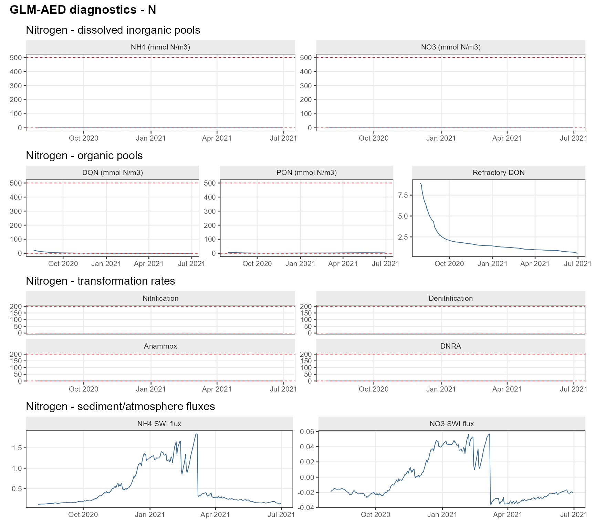
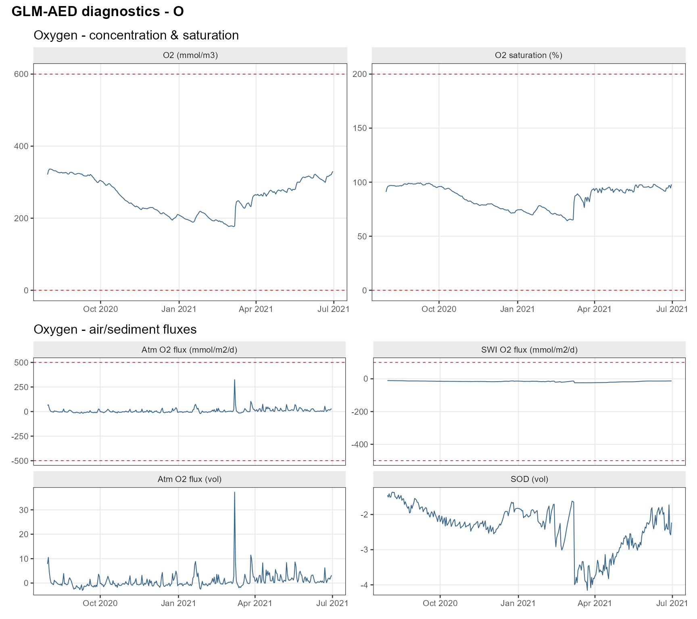
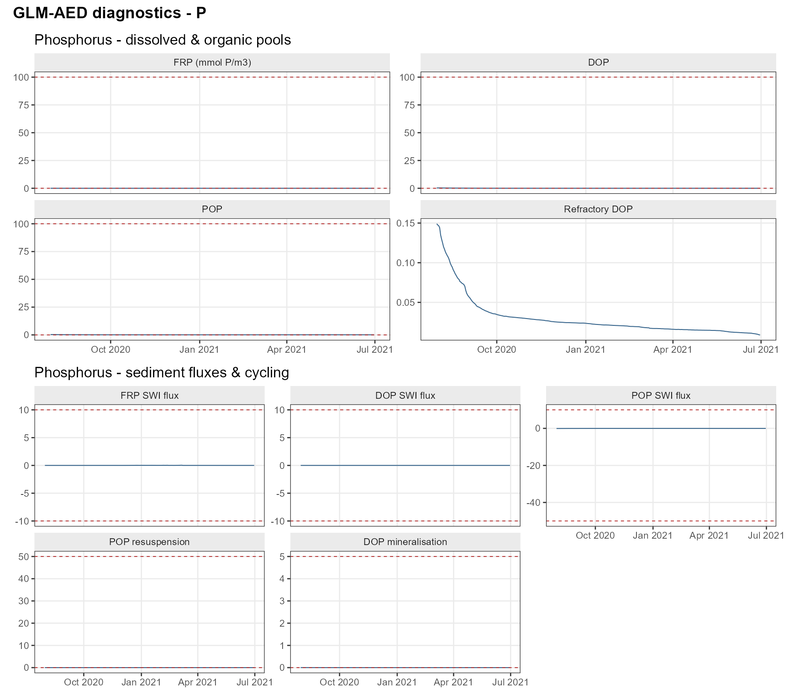
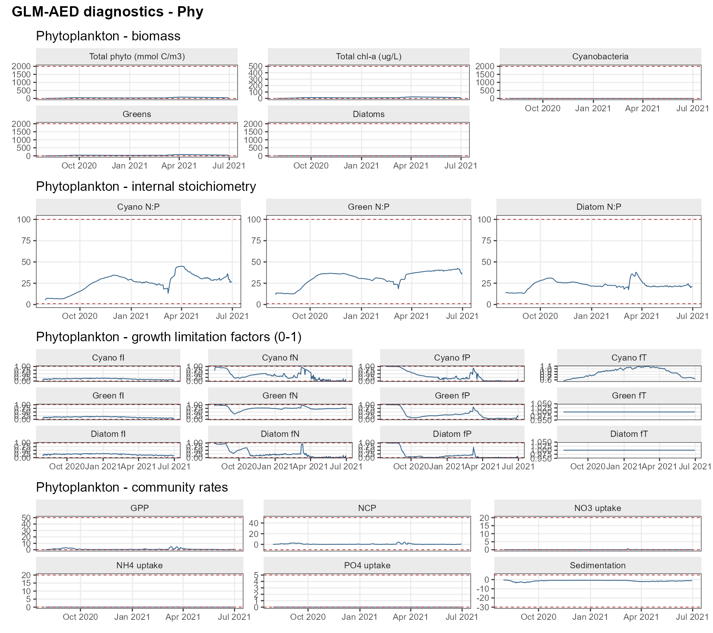
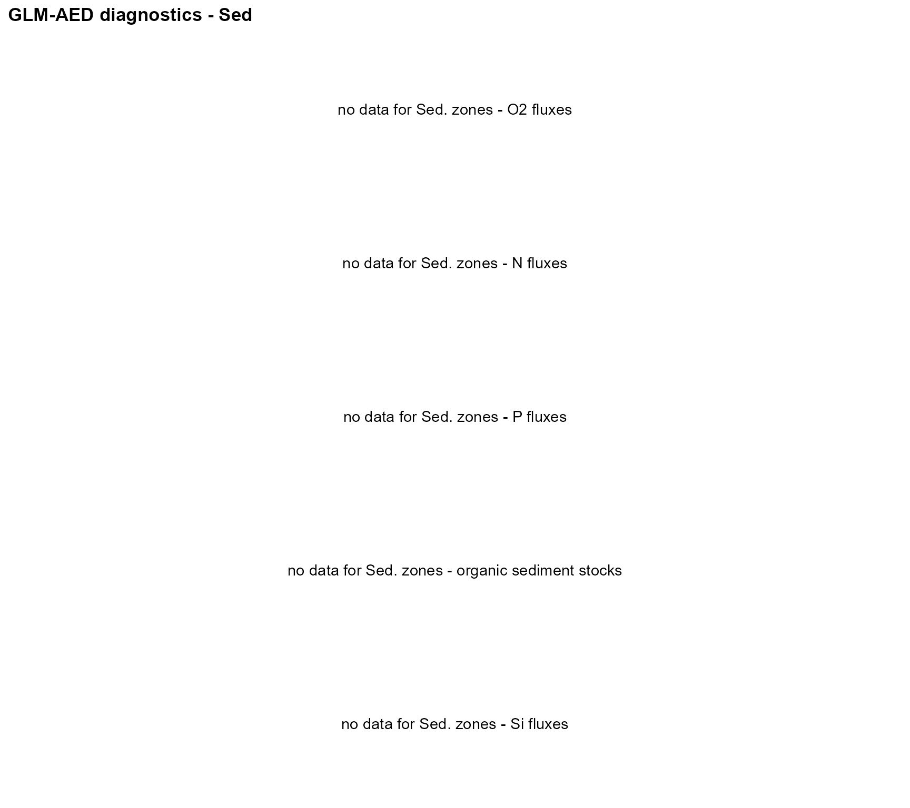
The function returns a list with three components:
-
$summary— a data frame with min, median, mean, max, and aflagcolumn ("ok"or a warning string) for each variable. -
$plots— a named list ofpatchworkplot objects grouped by biogeochemical element (O,N,P,Phy,Sed). -
$data— the tidy data frame used to produce the plots.
You can filter the diagnostics to a specific element or type:
# Nitrogen state variables only
diag_N <- run_glm_aed_diagnostics(
aeme = aeme,
groups = "N",
plot = TRUE,
print_table = FALSE
)
# Process-rate variables only
diag_proc <- run_glm_aed_diagnostics(
aeme = aeme,
groups = "process",
plot = FALSE,
print_table = TRUE
)Oxygen diagnostic page
plot_glm_diagnostics() provides a focused four-page
diagnostic panel specifically designed to debug anomalous dissolved
oxygen behaviour — a common challenge when coupling hydrodynamics with
biogeochemistry:
pages <- plot_glm_diagnostics(aeme = aeme)
# Page 1: oxygen state and key physical drivers
print(pages$oxy)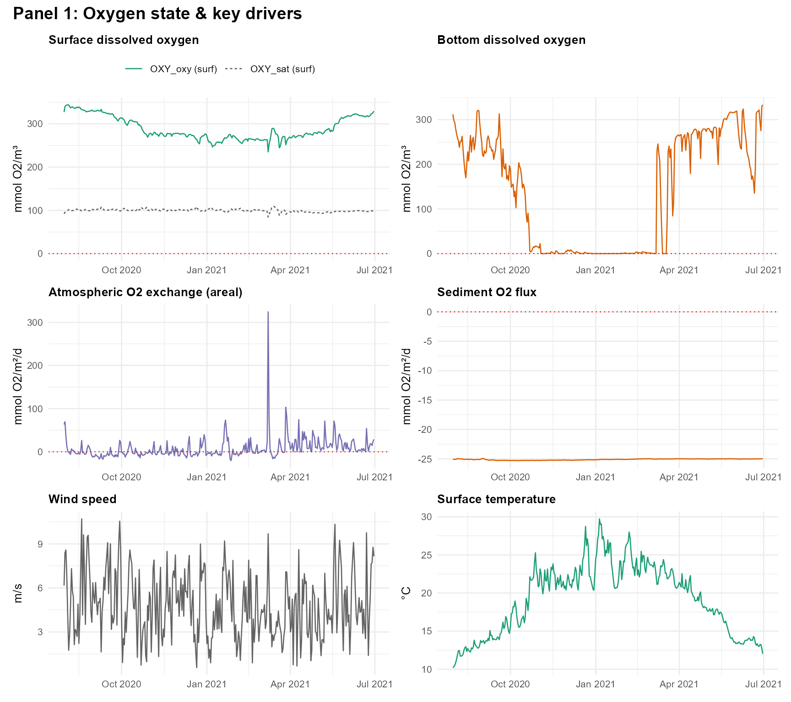
# Page 2: mixing and physical structure
print(pages$physical)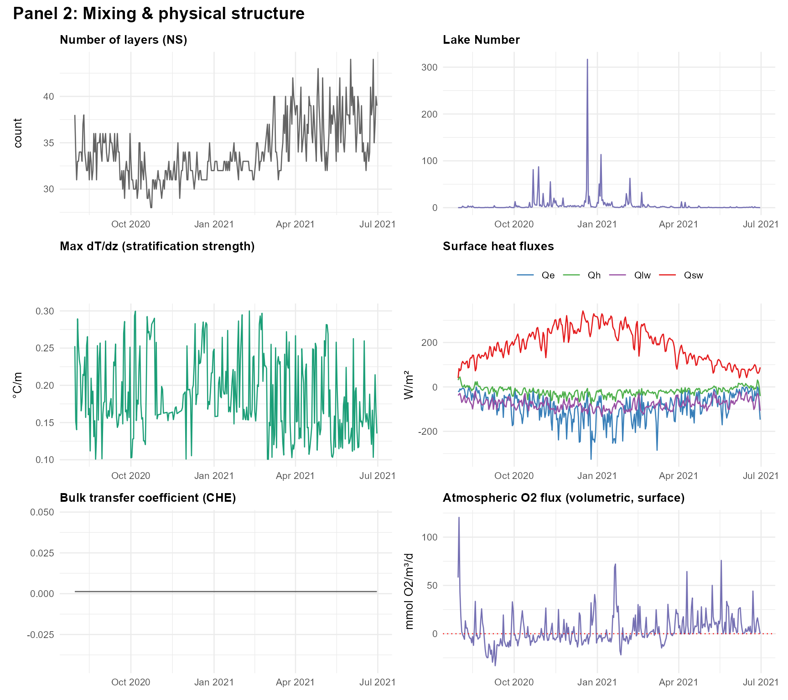
# Page 3: biological oxygen demand
print(pages$bod)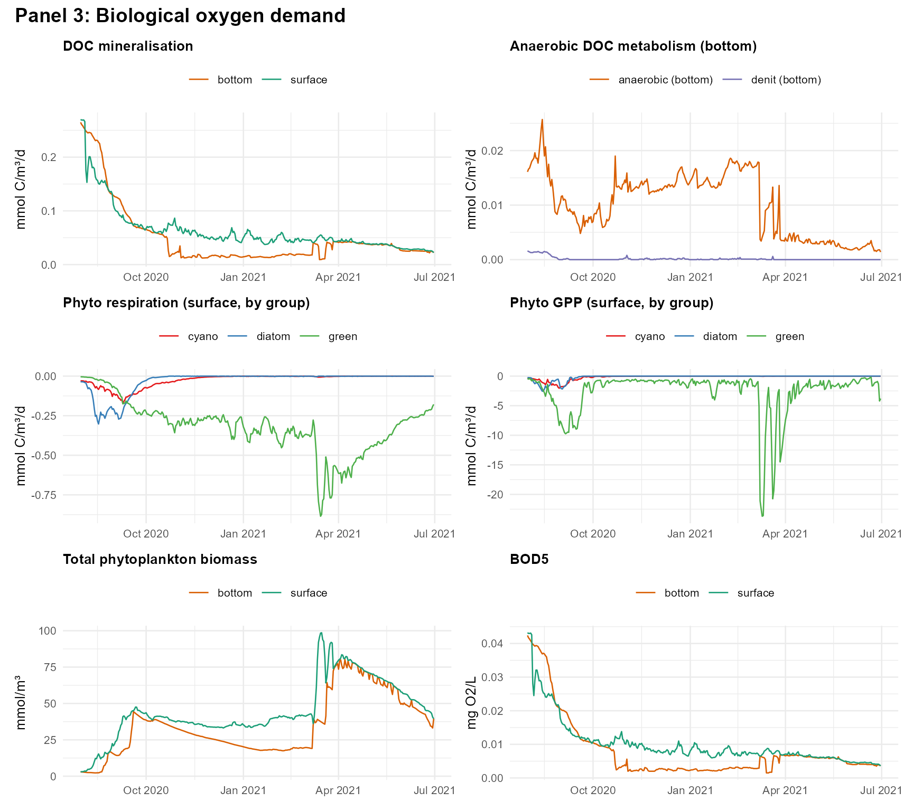
# Page 4: sediment–water interface fluxes
print(pages$sediment)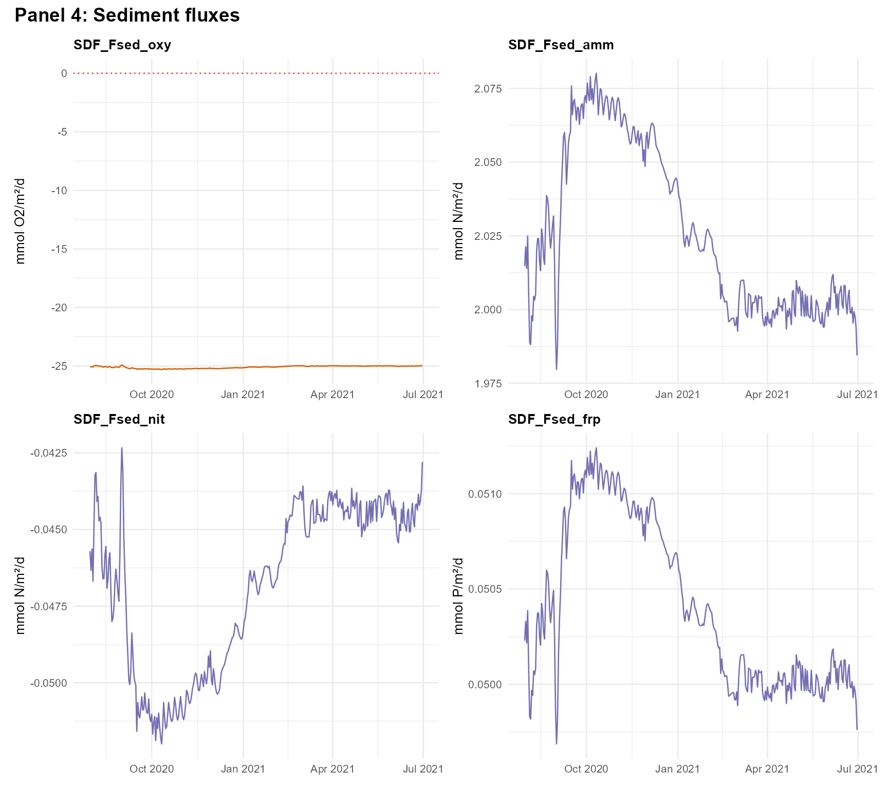
Working with the GLM configuration directly
The raw GLM hydrodynamic nml (glm3.nml or
glm4.nml, resolved via find_glm_nml()) and
aed/aed.nml file can be read, modified, and written using
the NML helpers bundled with AEME:
# Retrieve the parsed configuration
cfg <- read_model_config(model = "glm_aed",
lake_dir = get_lake_dir(aeme))
# Access GLM hydrodynamic section
glm_nml <- cfg$hydrodynamic
glm_nml$morphometry$lake_name
# Access AED biogeochemistry section
aed_nml <- cfg$bgc$aed
aed_nml$aed_nitrogen$rnitrif # nitrification rateFor quick edits to a single parameter without loading the whole
config, get_glm_param()/set_glm_param() work
directly against the nml file on disk (see
vignette("testing-parameters")):
path_glm <- file.path(get_lake_dir(aeme), "glm_aed")
get_glm_param(path_glm, "Kw")
set_glm_param(path_glm, Kw = 0.5, coef_mix_hyp = 0.3)Retrieving parameters by module
get_aeme_parameters() provides a convenient way to query
the AEME parameter library for all GLM-AED parameters belonging to a
particular module:
# All GLM-AED light parameters
light_params <- get_aeme_parameters(model = "glm_aed",
module = "light")
light_params[, c("name", "value", "min", "max")]
#> # A tibble: 6 × 4
#> name value min max
#> <chr> <dbl> <dbl> <dbl>
#> 1 light/light_mode 0 0 0
#> 2 light/n_bands 4 2 6
#> 3 light/light_extc 1 0.5 1.5
#> 4 light/energy_frac 0.51 0.255 0.765
#> 5 light/Benthic_Imin 10 5 15
#> 6 light/Kw 0.2 0.1 0.3
# AED nitrogen module parameters
n_params <- get_aeme_parameters(model = "glm_aed",
module = "nitrogen")
n_params[, c("name", "value", "min", "max")]
#> # A tibble: 62 × 4
#> name value min max
#> <chr> <dbl> <dbl> <dbl>
#> 1 aed2_nitrogen/theta_sed_amm 1.08 0.54 1.62
#> 2 aed2_nitrogen/Fsed_amm 30 15 45
#> 3 aed2_nitrogen/Ksed_amm 31.2 15.6 46.9
#> 4 aed2_nitrogen/Fsed_n2o 0 0 0
#> 5 aed2_nitrogen/Ksed_n2o 100 50 150
#> 6 aed2_nitrogen/theta_sed_nit 1.08 0.54 1.62
#> 7 aed2_nitrogen/Fsed_nit 5.2 2.6 7.8
#> 8 aed2_nitrogen/Ksed_nit 100 50 150
#> 9 aed2_nitrogen/Kpart_ammox 1 0.5 1.5
#> 10 aed2_nitrogen/Ranammox 0.001 0.0005 0.0015
#> # ℹ 52 more rowsSummary
This vignette demonstrated the key GLM-AED-specific features available in AEME:
Model description — GLM provides variable-layer 1-D hydrodynamics; AED supplies modular biogeochemistry ranging from simple oxygen dynamics through to full nutrient–phytoplankton food-web simulation.
Module selection —
set_glm_aed_models()lets you enable or disable individual AED modules to match the complexity and data requirements of your application.Sediment zones — The
estimate_sed_zones()→glm_sed_params()→set_aed_sed_const2d()workflow automatically derives depth-varying sediment parameters from the lake hypsograph and optional near-bed observations.Configuration visualisation —
plot_glm_config()provides an interactive overview of the model setup.Diagnostics —
run_glm_aed_diagnostics()andplot_glm_diagnostics()offer structured, automated checks for common biogeochemical issues (unrealistic concentrations, oxygen anomalies, excessive or negligible fluxes).Parameter access —
get_aeme_parameters()makes it easy to explore and modify individual model parameters for manual tuning or automated calibration (see the aemetools package).